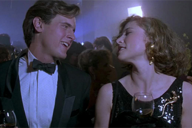
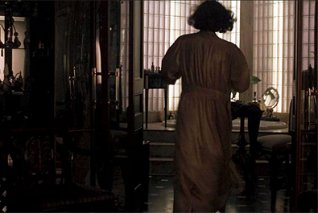
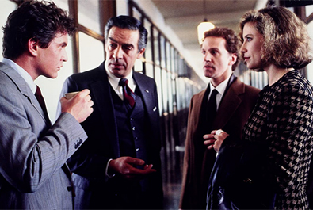
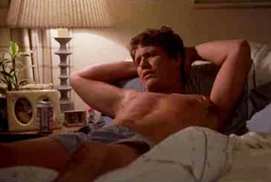
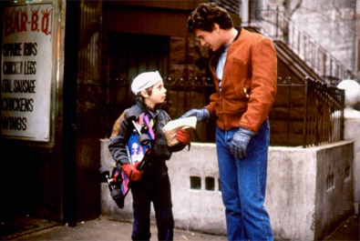
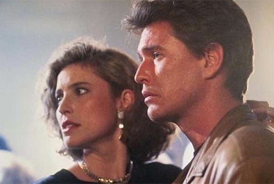

Thierry de Ganay
Mimi Polk Gitlin
Harold Schneider
Howard Franklin
Chris Burian-Mohr (art direction)
Linda De Scenna (set decoration)
Colleen Atwood (costume design)


Detective Mike Keegan
Claire Gregory
Lieutenant Garber
T.J.


The film was initially pitched to Scott in 1982 during a dinner party by Howard Franklin. It was primarily written by Franklin by late 1982 with Scott years later bringing in Danilo Bach and David Seltzer to refine it.
Ridley Scott made the film following Legend which had been a notable box office failure. In July 1986 Alan Ladd, Jr. announced the film would be made for MGM. By September the project had shifted to Columbia Pictures where David Puttnam, who produced Scott's debut feature The Duellists, was head of production. Tom Berenger was cast in the lead role on the strength of his performance in Platoon. Principal photography began on 8 December 1986 with the shoot lasting thirteen weeks. Locations included Bergdorf Goodman department store, Central Park, Guggenheim Museum and Burbank Studios. Production moved to Burbank Studios on 19 January 1987 to film the interior of Miss Gregory's apartment and Mike Keegan's home in Queens. The interiors used for the nightclub scenes were filmed on the RMS Queen Mary docked in Long Beach.
Roger Ebert gave the film two stars out of four and wrote, "There is something fundamentally wrong with a script in which the hero sleeps with the wrong woman. I am not talking here in moral terms, but in story terms. The makers of this film got so carried away by their 'High Concept' that they missed the point of the whole story". He did, however, praise Lorraine Bracco for playing her role "with great force and imagination". John Ferguson of Radio Times awarded it four stars out of five, describing it as an "intelligent thriller" which "remains one of Ridley Scott's most quietly satisfying works". He wrote that "it may lack the power of the director's Gladiator, Thelma & Louise and Blade Runner, but this is still beautifully shot and remains a stylish affair" and he praised the performances as "first rate".

